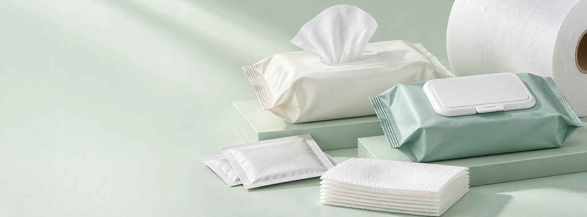

为品牌、零售渠道与餐饮客户定制生产。从单片独立装到家庭多片装，按使用场景匹配材质与包装。
10 片湿巾、40 抽乳霜纸和单片冰感小毛巾，三种规格用于品牌赠品。
卫生湿巾有 10 片与 60 片包装；同系列还覆盖婴儿手口湿巾、厨房湿巾和洗脸柔巾。
湿厕纸采用原生木浆，覆盖 8 片便携装与 40 片家庭装，另有卷纸与洗脸柔巾。
6 条湿巾自动生产线与 2 条棉柔巾自动生产线，承接单片湿巾、多片湿巾及棉柔巾生产。纸巾与湿巾生产已通过 ISO 9001 质量管理体系认证。
查看定制产品、自有品牌及商用纸品的详细规格。
沟通产品用途、材质、每包片数与采购数量。业务联系人为苏宏。